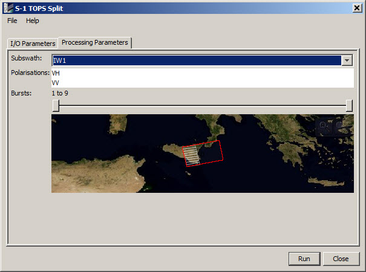

| TOPSAR Split |
|
The TOPSAR Split operator provides a convenient way to split each
subswath with selected bursts into a separate product. This operator is the first processing
step in the TOPS InSAR processing chain.
The user may select the desired subswath with desired bursts and polarisations.
enableSingleSwathMode, default: off): Allows a product that contains
only one subswath as input. By default a multi-swath product is required.firstBurstIndex, default 1) and Last Burst Index
(lastBurstIndex, default 9999): The first and last burst of the split product, counted from 1.
A last index larger than the number of bursts in the subswath is reduced to the last burst.wktAoi, default: empty): A polygon in WKT format, given in geographic
coordinates (longitude, latitude). If set, the operator keeps the bursts, from the first to the last one that
intersect the polygon, within the burst range given above. The burst indices are overwritten. If the polygon does
not overlap any burst, the operator stops with the message "wktAOI does not overlap any burst".
GPT operator: TOPSAR-Split. Generated from the operator source; parameter names are those used in GPT and graph XML.
| Parameter | Type | Default | Allowed values | Unit | Description |
|---|---|---|---|---|---|
subswath | String | The sub-swath to extract (e.g. IW1, IW2, IW3); defaults to the first sub-swath of the acquisition mode | |||
enableSingleSwathMode | boolean | false | Enable processing of single-swath products | ||
selectedPolarisations | String[] | The list of polarisations | |||
firstBurstIndex | Integer | 1 | [1, *) | The first burst index | |
lastBurstIndex | Integer | 9999 | [1, *) | The last burst index | |
wktAoi | String | WKT polygon to be used for selecting bursts |